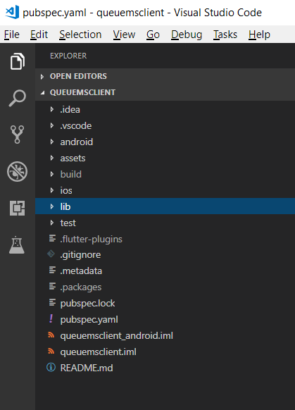
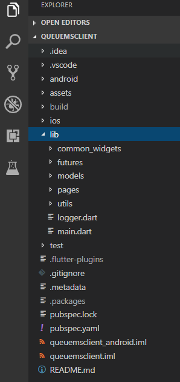
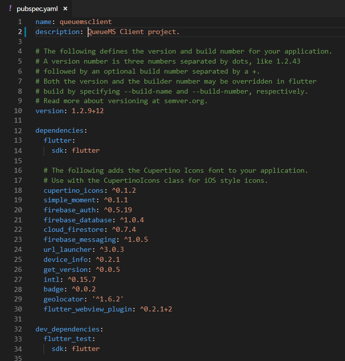
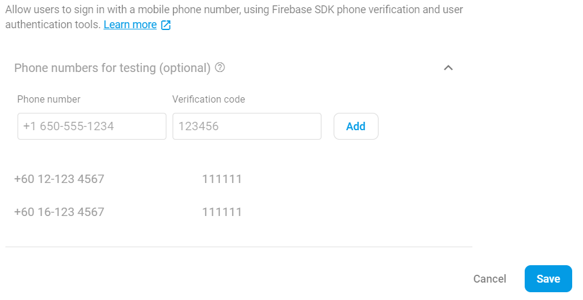
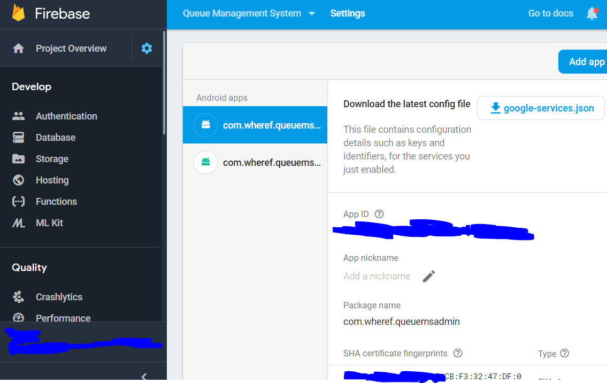

Paperless QueueMS Documentation by Log Searcher
Queue management system (QMS) is a product offering token management services to manage the incoming and outgoing customers. Queues of people form in various situations and locations in a queue area. QMS is applicable to Restaurant, Food Stall, Clinic and etc. QMS can reduce the workforce for the business and also reduce the cost of maintenance.
Paperless Queue Management System allows you to get a queue number using your smartphone. It’s the perfect way to monitor & track your real time queue status remotely using only smartphone without the need to be physically chained to the waiting area at the customer service outlet. QueueMS allows you to go for a cup of coffee or even window shopping at nearby premises while still intact queueing for your turn. It offers a peace of mind because the real time queue status update on your smartphone ensure you will not miss the queue! Just relax and enjoy your coffee while still in queue.
Paperless Queue Management System included 3 projects.
1. Client APP
Folder Name is 'queuemsclient'
This project is a Flutter project
2. Admin APP
Folder Name is 'queuemsadmin'
This project is a Flutter project
3. Web Application
Folder Name is 'queuems'
This project is a Web project with Angular, NodeJS and Firebase Hosting.
This document was an Installation Guide. Some of the installation guide was based on the Internet Tutorial to gain a basic knowledge.
Project Structure
Assumed that, you have a basic knowledge on Firebase, Android and Angular. I am using VS Code and Andriod Studio for working on the project. The project structure was shown below:-
| Flutter Project |
|  |
Flutter Files and Structure
| Flutter Project |
|  |
Configuration Files
The flutter main configuration was named pubspec.yaml. If want release an APK version, you should rename the version as shown below:-

Flutter Command
To get started Flutter project, you can refer to https://flutter.io/get-started/install/
Common Flutter Commad that I frequently used:-
- > flutter doctor
- > flutter run
- > flutter build apk
- > flutter install
Setup Firebase google-service.json
I recommanded to read the basic setup a Firebase project online here
After that, download google-services.json into project

Setup Firebase Auth
The projects were using phone auth. You should enable the phone auth like the screenshot below:-

For testing purpose, you can add couple of testing phone number and verification code
For real env and receive the SMS verification, you need setup the SHA key like the sreenshot below. Please read the guide here
Setup a Web Application
The Web Application project folder was called 'queuems' which was developed with Angular, Node JS and Firebase Hosting.
Make sure the NodeJS was installed on your PC. Download is here [IMPORTANT!].
This project was used for display the running real time token number on DISPLAY UNIT such as smart TV.
This project should be deployed on Firebase Hosting with the tutorial here [IMPORTANT!].
This tutorial will init a Firebase Hosting project withe Firebase CLI.
For this project, the command should be ran:
1. Goto [BASE_PATH]\queuems\src\environments\
Edit 'environment.prod.ts' and 'environment.ts' files with the property on 'google-service.json'
2. Goto [BASE_PATH]\queuems\
Run 'npm i' which will init all the node module from the pre defined on 'package.json' file.
3. Goto [BASE_PATH]\queuems\functions\
Run 'npm i'
4. Goto [BASE_PATH]\queuems\
Run 'ng serve' which will start the locahost server with this address http://localhost:4200
5. If everything is ok, generate the output on the [BASE_PATH]\queuems\dist\queuems\ with command 'ng build --prod'
6. If everything is ok, deploy to Firebase Hosting with command 'firebase deploy'.
Run 'firebase deploy' which will deploy the hosting and functions to the Firebase Hosting
Customize the Launcher Icon (Application Icon)
You just need to replace the following image res/drawable-xxxhdpi/ic_launcer.png with yours. Please make sure to create an image with the same image size (width and height).
Build apk Release
Please read this doc here [IMPORTANT!]
The predefined JKS file is 'simple-key.jks'. The configuration file is 'key.properties'. The provided projects was defined with this default setting and no need to configure for startup. However, if need a new JKS, 'key.properties' should be modified.
Useful Tutorial
- http://myhexaville.com/2018/04/09/flutter-push-notifications-with-firebase-cloud-messaging/
- https://marcinszalek.pl/flutter/flutter-fullscreendialog-tutorial-weighttracker-ii/
- https://flutter.dev/docs/deployment/android
- https://flutter.dev/docs/development/accessibility-and-localization/internationalization